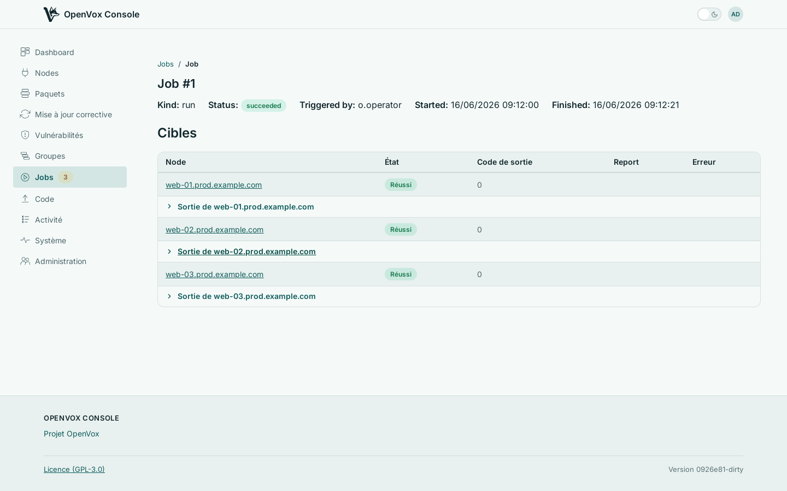

Utiliser
Lancer des Jobs
Exécutez Puppet ou un Task Puppet à la demande sur un Node, une sélection, les Nodes sélectionnés par une requête ou un groupe de Nodes, et voyez ce qu'a fait chaque Node.
La console peut exécuter Puppet sur des Nodes immédiatement, plutôt qu'à leur prochaine exécution planifiée, et exécuter les Tasks Puppet que contient votre code déployé. Chaque requête est un Job, consigné avec chaque Node visé et ce qui s'est passé sur chacun.
Lancer un Job nécessite orchestrator:run ; voir les Jobs nécessite orchestrator:read. Un Node doit être connecté pour être atteint : voir Ajouter des Nodes.
Si votre rôle est accordé sur certains groupes de Nodes, vous ne pouvez lancer de Jobs que sur des Nodes de ces groupes, et vous ne voyez que leurs Jobs. Un Job qui nomme un Node hors de ces groupes est refusé en bloc - rien ne s'exécute non plus sur les autres Nodes - et la console indique quels Nodes retirer. Voir Utilisateurs, rôles et jetons.
Pour effectuer plusieurs exécutions et Tasks dans l'ordre, voir Exécuter des Plans. Pour lancer un Job plus tard, ou de façon répétée, voir Planifier des Jobs.
Exécuter Puppet
Depuis l'endroit où vous consultez les Nodes voulus :
- Un Node : sur la page du Node, exécutez Puppet.
- Une sélection : sur la page Nodes, sélectionnez des Nodes, puis exécutez Puppet sur la sélection.
- Tous les Nodes sélectionnés par un groupe : sur la page du groupe, exécutez Puppet sur les Nodes qu'il sélectionne.
Chacune ouvre une boîte de dialogue qui nomme les Nodes. Confirmez pour lancer un Job, vers lequel vous êtes alors conduit.
Ou partez de la page Jobs, où Exécuter Puppet et Exécuter le Task vous permettent d'indiquer les Nodes : voir Choisir les Nodes.
Options d'exécution
La boîte de dialogue propose trois options. Si aucune n'est choisie, l'exécution est ordinaire.
- No-op indique ce que l'exécution changerait, sans rien modifier. Le Job affiche la liste pour chaque Node.
- Sortie de débogage enregistre le journal de débogage de Puppet pour chaque Node dans le Job.
- Environment demande au Node de s'exécuter sur cet Environment, pour essayer un Node sur une branche.
L'Environment est une demande, pas une substitution. Lorsque les groupes de Nodes d'un Node définissent un Environment, Puppet utilise celui-ci quoi que demande l'exécution. Le Job signale chaque Node qui s'est exécuté dans un autre Environment que celui demandé, une fois le Report du Node arrivé.
Une exécution avec options enregistre ce que Puppet a affiché. Ouvrez Sortie sous la ligne d'un Node dans le Job pour le lire. Une sortie longue est tronquée à 256 Ko, et l'indique.
Les options d'exécution nécessitent un client d'agent de Node issu de cette version de la console ou d'une version ultérieure. Un client plus ancien refuse la requête, et la ligne du Node échoue en indiquant que le client est trop ancien. Puppet n'est pas du tout exécuté sur ce Node : une requête no-op n'est donc jamais effectuée comme une exécution réelle. Mettez le client à jour - voir Tenir les agents de Node à jour - et relancez. Une exécution sans options fonctionne avec toutes les versions du client.
Via l'API, avec un jeton d'accès :
curl -X POST https://console.example.com/api/v1/orchestrator/runs \
-H "Authorization: Bearer <access token>" \
-H 'Content-Type: application/json' \
-d '{"targets":["web01.example.com","web02.example.com"]}'
Ajoutez options pour une exécution avec options. Chacune des trois peut être omise :
-d '{"targets":["web01.example.com"],
"options":{"noop":true,"environment":"feature_x","debug":true}}'
La requête est refusée, et aucun Job n'est créé, si le nom d'Environment n'est pas valide, si openvoxserver n'a pas d'Environment de ce nom, ou si elle nomme une option que la console ne connaît pas.
Choisir les Nodes
Exécuter Puppet et Exécuter le Task, sur la page Jobs, demandent sur quels Nodes s'exécuter, de l'une de ces trois façons :
-
Liste de Nodes : des certnames, un par ligne.
-
Requête : une requête PQL qui renvoie
certname. La console l'exécute sur openvoxdb au lancement du Job, et le Job s'exécute sur les Nodes qu'elle renvoie :inventory[certname] { facts.os.family = "Debian" and facts.os.release.major = "12" } -
Groupe de Nodes : les Nodes du groupe au lancement du Job.
Aperçu des Nodes montre les Nodes que désigne votre choix à cet instant. La boîte de dialogue vous les montre toujours avant de lancer quoi que ce soit : choisir Exécuter une première fois affiche l'aperçu, et une seconde fois lance le Job. Une requête ou un groupe qui ne sélectionne aucun Node ne lance rien.
Une requête doit être écrite dans la syntaxe propre de PQL et renvoyer certname. Une requête que la console ou openvoxdb ne peut pas utiliser est refusée avec la raison, qui, pour une erreur de syntaxe, est le message d'openvoxdb lui-même désignant l'erreur.
Si votre rôle est accordé sur certains groupes de Nodes, une requête ou un groupe vous donne les Nodes correspondants qui font partie de vos groupes, sans rien dire des autres. Votre requête ne peut pas non plus contenir de sous-requête - les accolades d'une entité à l'intérieur de celles d'une autre -, car une telle requête pourrait servir à se renseigner sur des Nodes que vous ne pouvez pas voir. Interrogez une seule entité, comme dans l'exemple ci-dessus ; inventory atteint chaque Fact et chaque trusted fact d'un Node. Les Nodes que vous nommez dans une liste restent soumis au tout ou rien.
Via l'API, indiquez query ou group (l'ID d'un groupe de Nodes) à la place de targets :
curl -X POST https://console.example.com/api/v1/orchestrator/runs \
-H "Authorization: Bearer <access token>" \
-H 'Content-Type: application/json' \
-d '{"query":"inventory[certname] { facts.os.family = \"Debian\" }",
"options":{"noop":true}}'
POST /api/v1/orchestrator/targets/resolve accepte les mêmes targets, query ou group et répond avec les Nodes, sans rien lancer.
Exécuter un Task
Un Task est un script livré dans le répertoire tasks d'un module, avec un fichier de métadonnées qui décrit ses paramètres. La console exécute ceux du code que vous avez déployé - voir Déployer du code - : il n'y a donc rien à installer pour un Task, hormis le déploiement du module qui le contient.
Les Tasks sont proposés aux mêmes endroits que les exécutions Puppet : Exécuter le Task sur la page d'un Node, sur la sélection de la page Nodes, sur les Nodes sélectionnés par un groupe, et sur la page Jobs. Dans la boîte de dialogue :
- Choisissez l'Environment d'où prendre le Task. Les Tasks sont lus dans le code de cet Environment tel qu'il est déployé à cet instant.
- Choisissez le Task. Sa description, et un champ par paramètre, apparaissent en dessous. Un champ marqué
*est obligatoire ; un champ laissé vide reçoit la valeur par défaut que déclarent ses métadonnées. - Vous pouvez aussi définir un Délai maximal. Un Task qui tourne encore une fois ce délai écoulé est arrêté, avec tout ce qu'il a lancé, et signalé comme ayant expiré. Le délai est de 30 minutes sauf indication contraire, et de 55 au plus.
- Exécuter le Task lance le Job et vous y conduit.
La console vérifie les paramètres au regard des métadonnées du Task avant de lancer quoi que ce soit, et marque chaque champ refusé avec la raison. Aucun Job n'est créé tant qu'ils ne sont pas corrects.
Un rôle peut être limité à certains Tasks ; la liste Task ne propose alors que ceux que vous pouvez exécuter. Un Task que vous n'avez pas le droit d'exécuter est refusé avec 403 et son nom, que vous le choisissiez dans la liste ou que vous le demandiez via l'API - voir Limiter un rôle à certains Tasks.
Un paramètre que les métadonnées du Task marquent comme sensitive - un mot de passe, un jeton - se saisit dans un champ masqué. Sa valeur est envoyée aux Nodes et nulle part ailleurs : les paramètres enregistrés du Job, sa page, le journal d'activité et le journal d'audit affichent tous Sensitive [value redacted] à la place.
Via l'API, en nommant le Task, ses paramètres et, éventuellement, l'Environment et le délai maximal en secondes :
curl -X POST https://console.example.com/api/v1/orchestrator/tasks \
-H "Authorization: Bearer <access token>" \
-H 'Content-Type: application/json' \
-d '{"targets":["web01.example.com"],
"task":"service",
"params":{"action":"restart","name":"nginx"},
"environment":"production",
"timeoutSeconds":600}'
L'API vérifie de la même façon : un Task inconnu, un paramètre manquant ou inattendu, ou une valeur d'un mauvais type est refusé avec 400, et ses fields nomment chaque problème. Le catalogue des Tasks derrière la boîte de dialogue figure aussi dans l'API : GET /api/v1/tasks/environments, GET /api/v1/tasks?environment=production et GET /api/v1/tasks/<module>/<task>?environment=production (le Task propre à un module est <module>/init).
Ce que fait le Node
L'agent du Node télécharge les fichiers du Task depuis le serveur Puppet qu'utilise son propre agent Puppet, avec son propre certificat, et n'exécute rien tant que chaque fichier ne correspond pas à la somme de contrôle obtenue par la console. Il conserve les fichiers vérifiés : réexécuter le même Task ne télécharge donc rien.
Le script d'un Task est exécuté directement : sa première ligne détermine donc ce qui l'exécute (#!/bin/sh, #!/usr/bin/env python3). Les Tasks Ruby s'exécutent avec le Ruby fourni avec l'agent Puppet et, sous Windows, les Tasks PowerShell s'exécutent dans PowerShell. Lorsqu'un Task propose plusieurs implémentations, le Node choisit celle qui lui convient.
Un Node trouve son serveur Puppet en interrogeant sa propre configuration Puppet. Un Node qui le trouve plutôt via des enregistrements DNS SRV n'a pas d'adresse à y lire ; définissez NODE_AGENT_PUPPET_SERVER=puppet.example.com:8140 dans l'environnement de son agent.
Les Nodes ont besoin d'un agent issu d'une console prenant en charge les Tasks. Un Node dont l'agent est plus ancien fait échouer chaque Task avec Error: Unknown subcommand 'task' : relancez le script d'installation du Node pour le mettre à jour - voir Ajouter des Nodes.
Suivre un Job
La page Jobs liste tous les Jobs, du plus récent au plus ancien. La page d'un Job affiche chaque cible sur sa propre ligne - son statut, son code de sortie et sa sortie -, si bien qu'un Job qui a réussi sur neuf Nodes et échoué sur un le dit exactement.


Si un Job s'est aussi exécuté sur des Nodes hors de vos groupes de Nodes, sa page n'affiche que vos Nodes et l'indique. Le statut global du Job couvre toujours tous les Nodes sur lesquels il s'est exécuté : il peut donc afficher failed alors que tous les Nodes que vous voyez ont réussi.
Pour un Task, la ligne de chaque cible se déplie pour montrer le résultat du Task : le JSON qu'il a affiché, ou son texte sous _output. Un Task échoue lorsqu'il se termine avec un code autre que 0, ou qu'il signale une _error, dont le message s'affiche comme erreur de la ligne.
Un Node qui n'était pas connecté au lancement du Job échoue immédiatement avec « agent not connected », au lieu de maintenir le Job ouvert.
Lorsqu'une exécution se termine, sa ligne renvoie vers le Report qu'elle a produit, avec chaque ressource qu'elle a modifiée.
La liste des Jobs et la page d'un Job affichent les options d'une exécution : No-op, l'Environment demandé et Débogage.
Elles indiquent aussi d'où viennent les Nodes d'un Job, lorsque ce n'était pas une liste : la requête ou le groupe de Nodes. Un Job lancé par une planification nomme celle-ci, et est consigné comme déclenché par le propriétaire de la planification. Si un Job lancé par une requête s'est aussi exécuté sur des Nodes hors de vos groupes de Nodes, vous voyez vos Nodes mais pas la requête.
Le lancement et l'issue de chaque Job sont également consignés sur la page Activité.
Un Plan occupe une ligne de la liste. Sa page affiche ses étapes dans l'ordre, chacune avec son propre état et les résultats par Node.
Un Job dont l'instance s'est arrêtée
Un Job est suivi jusqu'au bout par l'instance de la console qui l'a lancé. Si cette instance s'arrête avant que ses cibles aient terminé, le Job resterait sinon affiché en cours indéfiniment ; il est donc marqué en échec dès qu'il tourne depuis bien plus longtemps que n'importe quelle exécution ne pourrait durer.